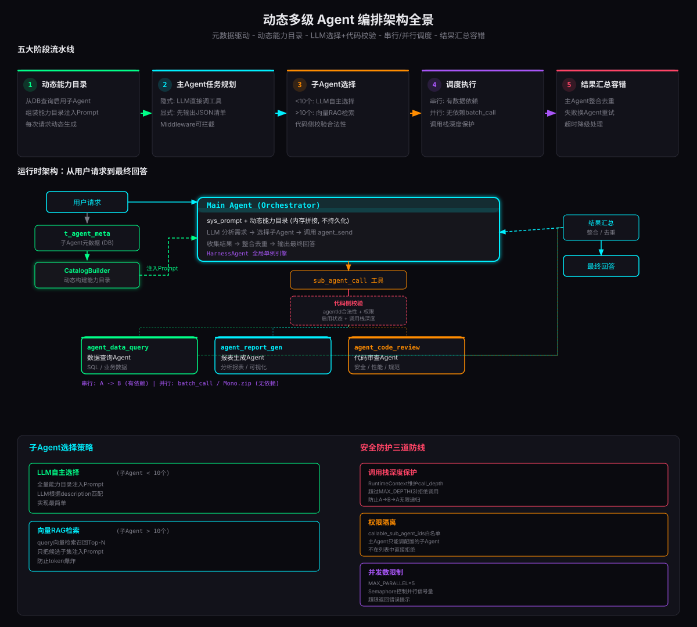

上一篇文章《AgentScope搭企业级Agent平台实战》拆解了企业级 Agent 平台的架构全景：身份权限、MCP/Skill 工具、上下文记忆、安全沙箱、高可用扩展。那篇文章解决的是「单个 Agent 怎么在企业环境里安全稳定运行」的问题。但真实业务场景中，一个 Agent 不可能什么都干--报表Agent擅长数据分析，代码Agent擅长审查代码，数据查询Agent擅长SQL。这就引出了一个更复杂的问题：主Agent怎么动态发现、选择、调度众多子Agent？
本文是上一篇的续篇，聚焦「动态多级 Agent 编排」这一核心场景。后台配置大量子Agent，主Agent收到用户问题后，完成任务拆解、感知子Agent能力池、挑选对应子Agent、调度执行、汇总结果。整个链路涉及5大阶段，每个阶段都有独立的工程挑战。本文基于 AgentScope Java v2.0.0 SDK，全链路拆解动态主子 Agent 编排的实现方案。
一、核心痛点：主Agent怎么知道子Agent擅长什么
动态编排的第一道门槛不是技术实现，而是认知问题：主Agent怎么知道众多子Agent分别擅长什么？
最直觉的方案是手动写死 Prompt，把子Agent列表塞进主Agent的 System Prompt。但这在生产环境根本行不通--后台新增子Agent、修改能力描述、禁用某个子Agent时，难道每次都要修改主Agent配置、重启服务？这完全违背了「元数据驱动」的工程原则。
这就引出了整个动态编排架构的设计哲学：元数据驱动 + 动态能力目录 + LLM选择 + 代码校验。LLM 负责智能选择子Agent，代码负责权限校验、合法性校验、深度保护。两者缺一不可--完全信任 LLM 会出安全问题，完全靠代码又失去了灵活性。
二、五大阶段流水线总览
动态主子Agent编排的完整链路分为5个阶段，每个阶段解决一个独立问题：
上图展示了完整的运行时架构：用户请求进来后，CatalogBuilder 从 t_agent_meta 表查询启用的子Agent元数据，动态构建能力目录文本，内存拼接到主Agent的 System Prompt 中（不持久化）。主Agent的 LLM 分析用户需求，从能力目录中选择合适的子Agent，通过 sub_agent_call 工具发起调用。工具内部经过三道安全校验（合法性、权限、深度），然后将任务委派给对应的子Agent执行。子Agent返回结果后，主Agent整合去重，输出最终回答。
三、阶段1：子Agent元数据与动态能力目录
3.1 元数据表设计
所有子Agent定义存数据库，主Agent和子Agent共用同一张表。关键字段包括能力描述（给LLM看）、能力标签、可调用的子Agent ID列表（权限隔离）、温度、最大迭代次数等。
3.2 动态构建能力目录
核心思路：不是修改数据库里主Agent的 sys_prompt，而是在构建 RuntimeContext 时内存拼接能力目录，不持久化。每次请求动态生成，后台新增子Agent下次请求立即生效。
以一个企业数据分析平台为例，通常配置3个子Agent：数据查询Agent、报表生成Agent、代码审查Agent。每个Agent有独立的 sysPrompt、能力标签和最大迭代次数。运行时从数据库加载启用的Agent列表，构建能力目录文本，拼接到主Agent的 System Prompt 尾部。
四、阶段2：主Agent任务规划
主Agent收到用户问题后，需要决定怎么拆解任务、调用哪些子Agent、以什么顺序调用。有两种规划模式，适用不同复杂度的场景。
显式规划模式下，LLM 输出的任务清单是一个 JSON 数组，每个任务包含步骤号、描述、目标 agent_id 和依赖关系。Middleware 拦截后可以校验所有 agent_id 的合法性--如果 LLM 编造了不存在的 agent_id，Middleware 注入错误提示让 LLM 重新规划。
五、阶段3：子Agent选择策略
子Agent选择是整个编排链路中最关键的决策点。选错了子Agent，后面的调度和汇总做得再好也没用。
5.1 策略1：LLM自主选择（子Agent少于10个）
把完整能力目录交给LLM，由大模型根据子任务描述和每个Agent的 description、capability_tags 做匹配选择。这是默认策略，实现最简单。
LLM 通过 sub_agent_call 工具调用子Agent，工具内部做三道代码侧校验：
- 合法性校验：agent_id 是否在主Agent允许调用的列表中
- 启用状态校验：子Agent是否存在且 status=1
- 调用栈深度校验：当前深度是否超过 MAX_DEPTH(3)
5.2 策略2：向量RAG检索（子Agent超过10个）
当子Agent数量很多，全部塞Prompt会token爆炸。这时需要先做向量检索，召回最匹配的Top-N候选子Agent，只把候选子集注入Prompt。
这个策略的本质是：先用向量检索做粗筛，再用LLM做精筛。向量检索负责从几十上百个子Agent中快速召回最相关的5个，LLM再从这5个中做最终选择。既避免了token爆炸，又保留了LLM的语义理解能力。
六、阶段4：子Agent调度执行
选定子Agent后，进入调度执行阶段。调度方式取决于子任务之间是否有数据依赖。
6.1 串行调度（有数据依赖）
子任务之间有数据依赖时，必须串行执行：前一步的输出是后一步的输入。比如"查询数据 -> 基于数据生成报表"，报表Agent需要数据查询Agent的结果作为输入。
HarnessAgent 原生工具调用就是串行模式--LLM在一次迭代中调用一个工具，拿到结果后进入下一次迭代。不需要额外开发，LLM自然行为就是串行调度：
6.2 并行调度（无数据依赖）
子任务之间无依赖时，可以同时跑多个子Agent。用 Reactor 的 Mono.zip 实现并行调用，两个子Agent同时执行，等待全部完成后收集结果：
除了程序化并行调用，还可以通过 sub_agent_batch_call 工具让 LLM 一次传入多个子Agent任务，工具内部用 Flux.merge 并行执行。批量调用有最大并行数限制（MAX_PARALLEL=5），超限返回错误。
七、阶段5：结果汇总与容错
子Agent执行完毕，结果作为工具返回值交给主Agent。主Agent负责整合多个子Agent的输出、去重冗余信息、校验结果是否满足需求。不需要业务代码手动拼接结果，交给LLM主Agent自己做汇总。
容错是生产环境的关键能力。子Agent可能执行失败、超时、返回空结果。每个子Agent调用都应配置 timeout(Duration.ofSeconds(30)) 超时控制，失败时返回结构化的错误信息给主Agent，主Agent可以决策：换一个子Agent重试、修改子任务指令重试、或告知用户无法完成。
八、安全防护三道防线
动态编排涉及主Agent调用子Agent、子Agent可能再调用其他子Agent，安全风险不容忽视。生产环境必须部署三道防线：
call_depth 计数器，每次子Agent调用前 +1，调用后 -1。超过 MAX_DEPTH(3) 直接拒绝调用。防止A调用B、B调用A的无限递归，这是动态编排最致命的风险。callable_sub_agent_ids 白名单，只有列表中的子Agent可以被调用。LLM 可能选择不在列表中的 agent_id，代码侧校验不通过直接拒绝，返回错误提示让 LLM 重新选择。九、架构选型速查表
不同场景下的推荐方案，可以直接对照选择：
| 场景 | 推荐方案 | 说明 |
|---|---|---|
| 子Agent 少于10个 | 全量Prompt注入能力目录 | LLM自主选择，实现最简单 |
| 子Agent 超过10个 | 向量RAG检索候选 | 先召回Top-N，再注入Prompt，防token爆炸 |
| 简单任务 | 隐式规划 | LLM直接工具调用，边想边做 |
| 复杂多步骤任务 | 显式JSON规划 + Middleware拦截 | 先规划再执行，可展示给用户，可人工干预 |
| 子任务有数据依赖 | 串行调度 | 前一步输出=后一步输入，原生支持 |
| 子任务无依赖 | 并行调度 | batch_call工具或Mono.zip并行执行 |
| 子Agent数量动态变化 | 动态能力目录 | 每次请求重新生成，无需重启 |
十、上生产检查清单
- t_agent_meta 表设计完整，包含 callable_sub_agent_ids 权限字段
- 能力目录每次请求动态生成，不持久化到数据库
- 后台新增/修改/禁用子Agent后，下次请求立即生效
- 子Agent超过10个时启用向量RAG检索策略
- 调用栈深度保护 MAX_DEPTH=3，防递归死循环
- 权限隔离：主Agent只能调 callable_sub_agent_ids 白名单中的子Agent
- 并发数限制 MAX_PARALLEL=5，Semaphore 控制并行信号量
- sub_agent_call 工具内部三道校验：合法性 + 启用状态 + 深度
- 串行调度：有数据依赖时前一步输出作为后一步输入
- 并行调度：无依赖任务用 Mono.zip 或 Flux.merge 并行执行
- 每个子Agent调用有 timeout(30s) 超时控制
- 子Agent失败返回结构化错误信息，主Agent可决策重试或降级
- 主Agent System Prompt 包含汇总规则：整合、去重、不暴露内部调用细节
结语
动态多级 Agent 编排的核心挑战不是"让 Agent 能调用子 Agent"，而是"让主 Agent 在运行时动态感知、智能选择、安全调度众多子 Agent"。这套5阶段流水线--动态能力目录、任务规划、子Agent选择、调度执行、结果汇总--把整个链路的复杂度收敛到了工程框架内。
与上一篇文章的单 Agent 企业级平台相比，动态编排引入了一个新的维度：Agent 之间的协作关系。单 Agent 解决的是"一个 Agent 怎么安全运行"，动态编排解决的是"多个 Agent 怎么高效协作"。元数据驱动让子Agent管理变成配置而非代码，动态能力目录让主Agent的感知能力实时更新，LLM选择 + 代码校验的分工让智能和安全兼得。
从架构设计到生产，关键在于三道安全防线是否到位：调用栈深度防递归、权限白名单防越权、并发限制防压垮。这三道防线不是可选项，是动态编排上生产的必要条件。没有安全防护的动态编排，就像没有刹车的汽车--跑得越快越危险。
参考资料
- AgentScope Java v2 官方文档 https://java.agentscope.io/v2/zh/intro.html
- AgentScope Java v2 子Agent文档 https://java.agentscope.io/v2/zh/docs/building-blocks/subagent.html
- AgentScope Java v2 Harness 架构 https://java.agentscope.io/v2/zh/docs/harness/architecture.html
- Reactor 文档 - Mono.zip https://projectreactor.io/docs/core/release/api/
- 上一篇文章：AgentScope搭企业级Agent平台实战 AgentScope搭企业级Agent平台实战